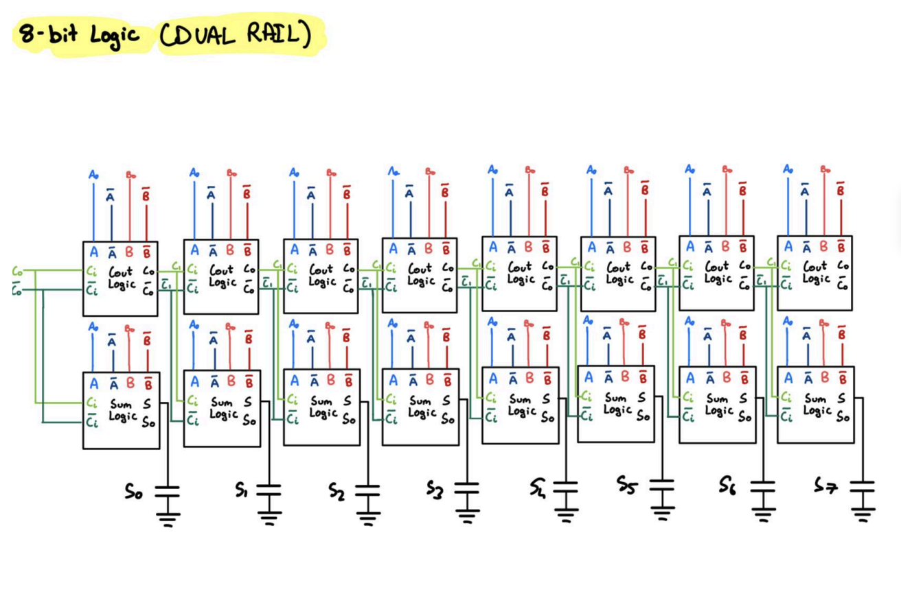
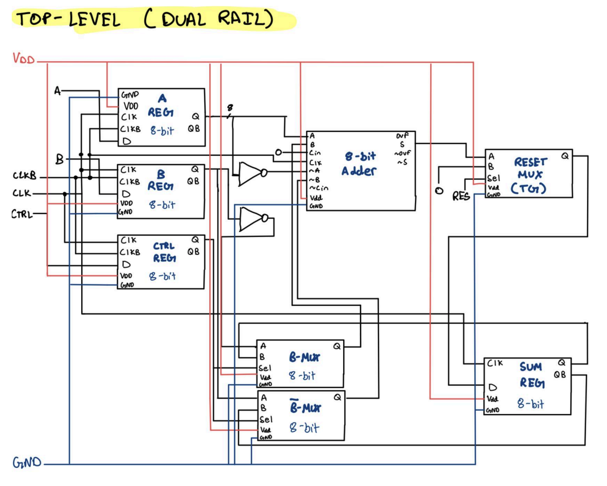

8-bit ripple-carry adder


overview
we were tasked with creating two versions of an 8-bit dual-mode ripple-carry adder — one optimized for high speed and the other for low power consumption. to achieve both objectives, we created two circuit schematics each using a different logic family: dual-rail domino logic for high speed and PTL + TGL logic for low power.
the dual-rail adder outperforms the low-power design by ~0.5 GHz in clock frequency, at the cost of nearly double the power consumption. we verified the high-speed design at 1.51 GHz and the low-power design at 1 GHz using a comprehensive extended testbench.
tools / techniques
- cadence virtuoso, dual-rail domino logic, pass-transistor logic (ptl), transmission gate logic (tgl)